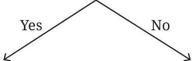
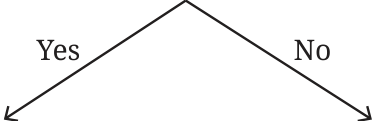
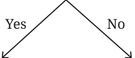
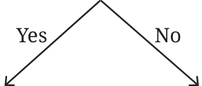

Is the year divisible by 100?

The year has 365 days Is the year divisible by 4?

The year has 366 days The year has 365 days
Can you write an expression for the number of days in 100 calendar years with this new adjustment? We saw that there are 25 years divisible by 4 in 100 years. 100 is also divisible by 4, but we have to exclude it. So only 24 years have 366 days, and the rest (76 years) have 365 days. So the expression can be written as,
( \(1004 - 100100\) ) \(\times 366 + (100 -\) ( \(1004 - 100100\) )) \(\times 365 = (24 \times 366) + (76 \times 365) = 36,524\) days.
This is close to 36524.22 days but is it close enough? What happens after 1000 years with this adjustment?
If we follow this new scheme of adding 1 day every four years, but not in the 100th year, the number of calendar days in 1000 years is
\(36524 \times 10 = 3,65,240\) days.
The number of days the Earth takes to go around the Sun 1000 times is
\(1000 \times 365.2422 = 3,65,242.2\) days.
So, there is a difference of 2.2 days. To bridge this gap, it was decided that every 400th year would be a leap year!
Is the year divisible by 400?

The year has 366 days Is the year divisible by 100?
The year has 365 days Is the year divisible by 4?

The year has 366 days The year has 365 days
With this scheme, let us calculate the number of days in 1000 calendar years.
In 1000 calendar years, how many years are divisible by 400? 2. In 1000 calendar years, how many years are divisible by 100 but not
divisible by 400? \(10 - 2 = 8\).
In 1000 calendar years, how many years are divisible by 4 but not divisible by 100 and 400? \(250 - 10 = 240\). The rest of the years are \(1000 - (2 + 8 + 240) = 750\). So, the total number of days in 1000 calendar years is
\((750 \times 365) + (240 \times 366) + (8 \times 365) + (2 \times 366) = 3,65,242\) days.
The Earth needs 3,65,242.2 days to go around the Sun 1000 times. Hence, in 1000 years, the calendar year is slightly shorter (by 0.2 days) than the actual number of days the Earth takes to go around the Sun. The calendar makers did not want to bother about a small difference that would happen in 1000 years! So, they left the scheme of leap years as is …